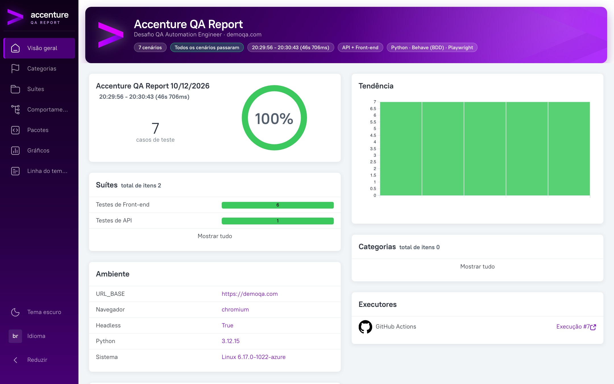
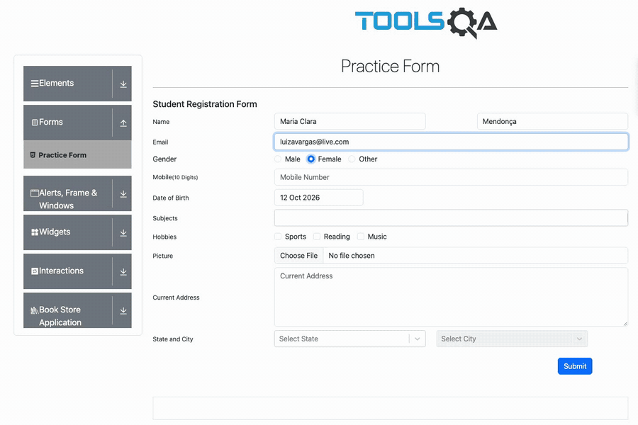
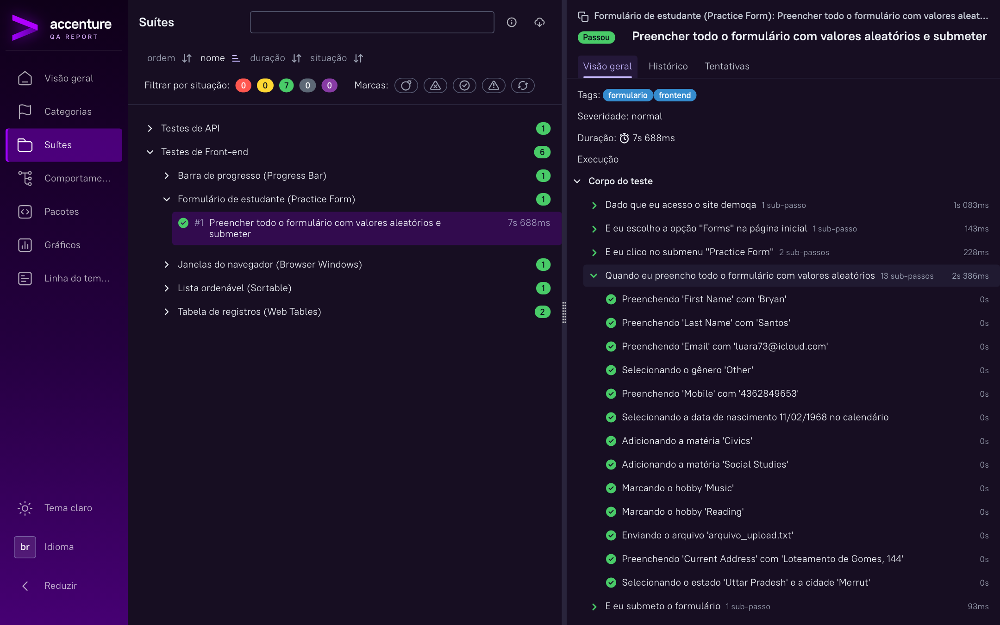
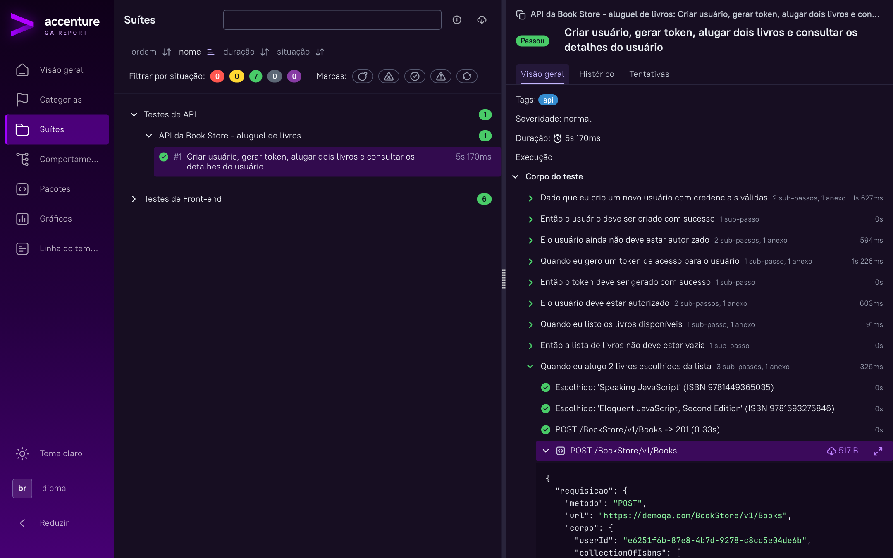
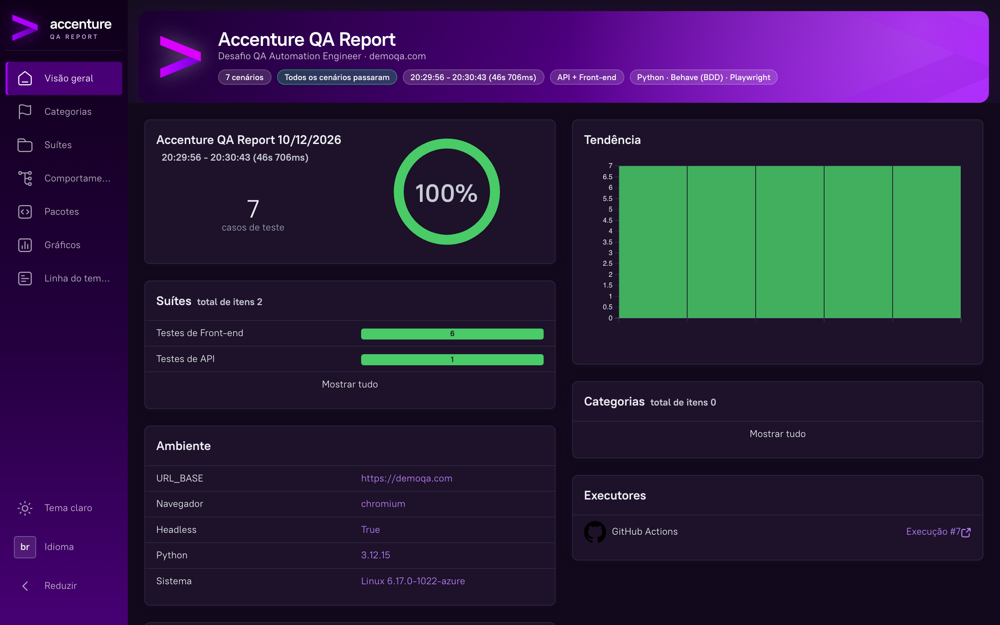
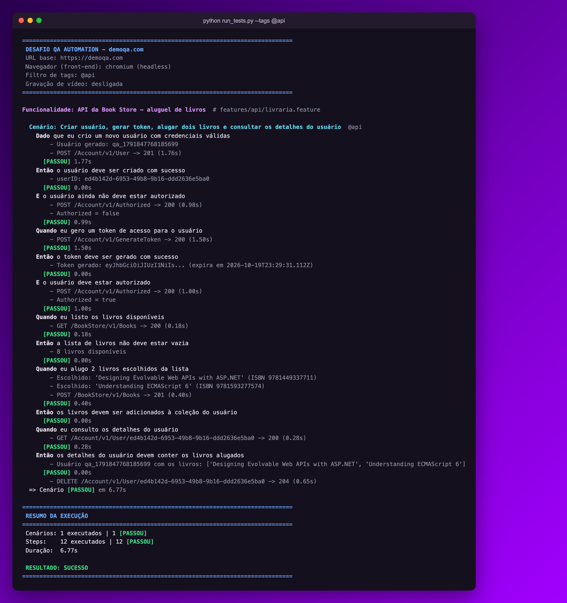

Todo o desafio do demoqa.com automatizado em BDD em português, rodando com um único comando, com evidência de cada passo e um relatório Allure com a identidade da Accenture publicado automaticamente.

Atualizado a cada push, com vídeos e histórico.
danilomedeiros100.github.io/desafio-qa-accenturePipeline com o resultado e os artefatos de cada push.
github.com/…/actions/workflows/tests.ymlO da última execução na sua máquina (gerado pelo run_tests.py).
Cada item do enunciado está coberto, e o projeto foi pensado para ser fácil de rodar, fácil de ler e fácil de confiar.
API e os 5 fluxos de front-end, incluindo os 12 registros criados dinamicamente pelo Gherkin.
python run_tests.py roda tudo, gera o relatório e já abre no navegador. Também com botões prontos no PyCharm.
Em português e no tema claro, com logo, cores da marca e faixa de resumo. Testes separados em API e Front-end.
O GitHub Actions roda os testes e publica o relatório no GitHub Pages, com tendência entre execuções.
Vídeo de cada cenário de front, screenshots, requisição e resposta de cada chamada da API, trace em falhas.
Cada step aparece no terminal em tempo real com o que foi feito, e um log limpo fica salvo em arquivo.
BDD em português, Page Objects, cliente de API, massa de dados aleatória e steps finos.
Anúncios bloqueados, esperas inteligentes e três instabilidades do demoqa identificadas, tratadas e documentadas.

Nada de mock: é o vídeo que o próprio projeto grava durante a execução.
Requisito: Python 3.10+. Para o relatório local, o Allure CLI (sem ele, os testes rodam normalmente).
Baixe o projeto do GitHub.
Ambiente virtual, dependências e o Chromium.
Executa API + Front-end e abre o Accenture QA Report.
| Quero… | Comando |
|---|---|
| Rodar tudo e abrir o relatório | python run_tests.py |
| Ver o navegador executando | python run_tests.py --visivel |
| Só os testes de API | python run_tests.py --tags @api |
| Só os testes de Front-end | python run_tests.py --tags @frontend |
| Gravar vídeo de cada cenário | python run_tests.py --video |
| Reabrir o relatório da última execução | python run_tests.py --somente-relatorio |
Gerado localmente pelo run_tests.py e publicado pelo CI em danilomedeiros100.github.io/desafio-qa-accenture. Clique nas imagens para ampliar.




reports/execucao.log.E sempre um passo além do mínimo pedido.
| Enunciado | O que o teste faz | Status |
|---|---|---|
| APIBook Store | Cria usuário, valida que ainda não está autorizado, gera token, confirma autorização, lista livros, aluga 2 livros e confere o usuário com os livros. Tudo numa execução contínua; o usuário é removido no final. | Coberto |
| FrontPractice Form | Preenche todos os campos com dados aleatórios, faz upload do .txt versionado, submete, valida o popup campo a campo e fecha. | Coberto |
| FrontBrowser Windows | Abre a nova janela, valida "This is a sample page", fecha e garante que só a original ficou aberta. | Coberto |
| FrontWeb Tables | Cria, edita (valida os dados novos e a ausência dos antigos) e deleta um registro. | Coberto |
| FrontWeb Tables · bônus | Cria 12 registros com a quantidade vinda do Gherkin, valida todos, deleta todos e confirma que os originais continuam intactos. | Coberto |
| FrontProgress Bar | Para antes de 25% e valida, completa 100% e reseta. Polling dentro do navegador, sem condição de corrida. | Coberto |
| FrontSortable | Embaralha a lista (ela já carrega ordenada) e ordena em ordem crescente com drag and drop, validando cada movimento. | Coberto |
| Critérios gerais | BDD com Cucumber (Behave, com Gherkin em português), Page Objects, código organizado e versionado no GitHub. | Coberto |
Camadas simples e separadas: os steps só orquestram, as regras de tela ficam nos Page Objects e a evidência é gerada automaticamente.
Gherkin em português
Finos, só orquestram
Playwright e requests
Vídeo, JSON, prints, log
Local e GitHub Pages
Botão Close do popup: no site atual ele não fecha o modal. O teste clica em Close e, se o modal continuar aberto, fecha com ESC, registrando o motivo.
Reset da Progress Bar: zera a barra, mas o timer continua e ela volta a subir. Um observador no navegador registra o valor no instante do Reset, então o 0% é validado sem depender da velocidade.
Exclusão na Web Tables: excluir um registro novo remove junto os outros criados. O teste exclui os que restam e valida que nenhum sobrou e que os originais estão intactos.
Suporte nativo a múltiplas janelas, drag and drop HTML5, espera automática, vídeo e trace de execução, sem driver separado para instalar.
Os banners do demoqa cobrem botões e deixam a página lenta, então as requisições de anúncio são bloqueadas. Cada cenário entra pela home, clica no card e no submenu, como pede o enunciado, e valida a URL de destino.
Dados aleatórios a cada execução (Faker), registros localizados pelo e-mail e não pela posição na tabela, um contexto de navegador novo por cenário e o usuário da API removido no final.